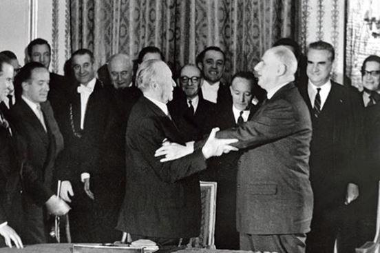
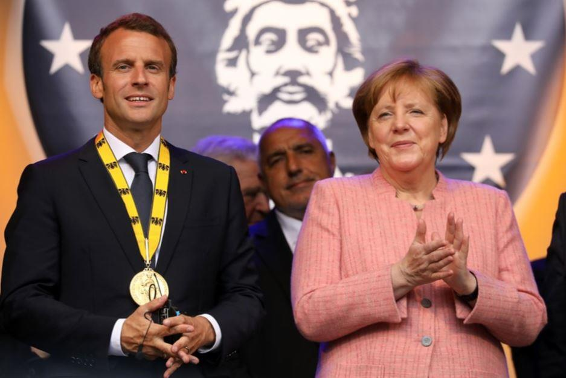
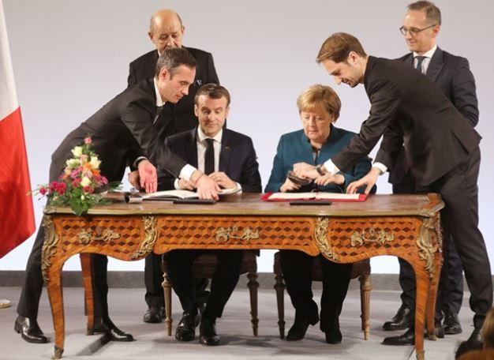
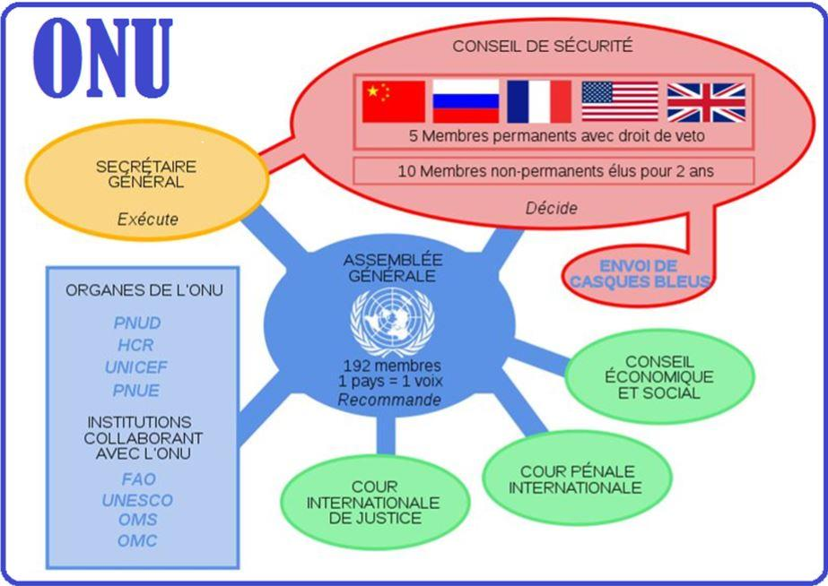
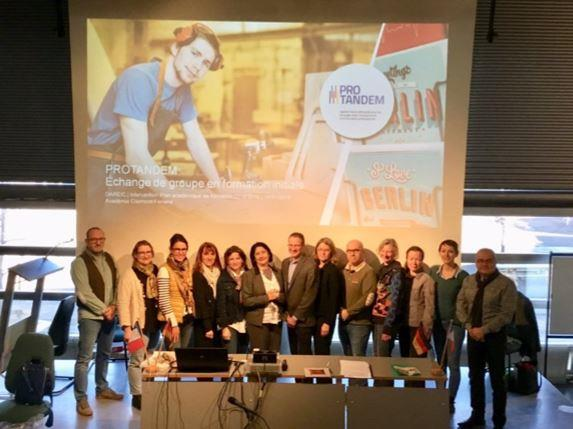
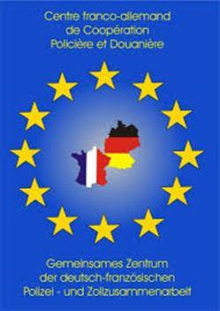
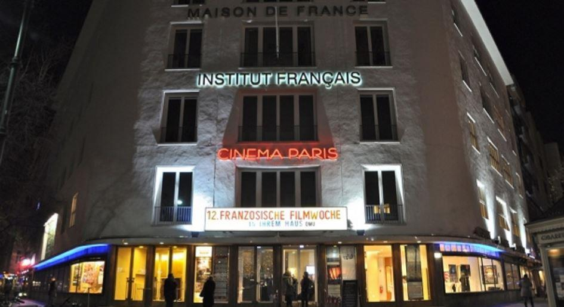
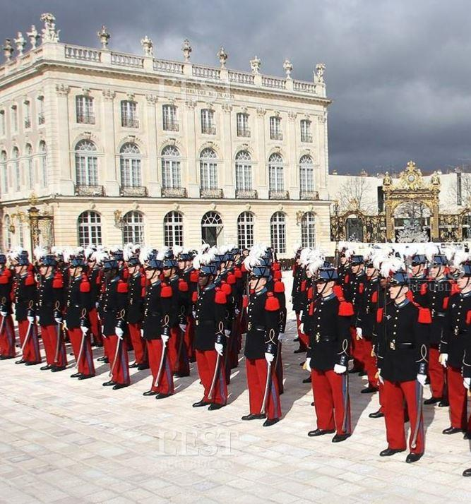

La rédaction de cet article n’a été réalisé qu’un mois après la signature du Traité d’Aix-la-Chapelle afin de considérer ce dossier de façon plus posée et avec une analyse prudente des points qui méritent des commentaires argumentés ainsi que des remarques quant à sa portée politique pour la relation bilatérale et pour l’Europe. Malheureusement en France, comme en Allemagne, des thèses complotistes les plus folles, des contrevérités et des « fake news » avaient fleuries à la veille de sa signature aussi bien dans les médias français que dans les réseaux sociaux ; véhiculés par des soi-disant « politiciens bien-pensants » dont l’honnêteté et la probité intellectuelle ont été totalement absentes du débat et n’ont permis que des polémiques stériles et médiocres. Il est malheureusement difficile de faire entendre raison, mais en démocratie tout le monde est libre de pouvoir s’exprimer sur tout et n’importe quoi…mais aussi n’importe comment. Aussi ai-je jugé indispensable de revenir sur quelques fausses vérités puis d’approfondir sérieusement le sujet.
Contrairement aux accusations fantaisistes, Monsieur Emmanuel Macron, président de la République française, avait annoncé, dès son discours de la Sorbonne en septembre 2017, son souhait de voir compléter et renforcer le Traité de l’Élysée, conclu entre le général de Gaulle et le chancelier Adenauer en 1963.
Cette décision fut finalisée lors du 55ème anniversaire du traité de l’Élysée en 20181 sur des propositions formulées conjointement entre le Bundestag et l’Assemblée nationale et dont les résolutions2 avaient été adoptées le jour même. En conséquence, et contrairement aux propos tenus par des personnes malveillantes, le projet et le contenu du nouveau Traité étaient en gestation…mais n’avait jusqu’alors intéressé personne, dont acte.
Mais voilà, entre temps la chancelière allemande et le président français ont fait l’objet de très virulentes attaques touchant à la politique intérieure et extérieures dans leur pays respectif.
Aussi les « ténors » de la politique française, en mal de notoriété, profitent de la crise des « gilets jaunes » et d’un mouvement anti-macron pour se faire entendre. Aussi le traité franco-allemand se prêtait merveilleusement bien à cet exercice de campagne pré-électoral pour les européennes.
La logorrhée, particulièrement confondante de nullité, de certains politiques ou journalistes forces l’admiration : une fois de plus la médiocrité la plus profonde a été l’apanage de personnalités françaises annonçant haut et fort des inepties qui relevaient plus de la brève de comptoir que d’une analyse politique sérieuse.
Malheureusement, ces fausses informations ont été relayés d’articles et messages postés sur les réseaux sociaux et dans les médias nationaux qui ont fait le buzz, et au lieu de mettre en exergue l’amitié franco-allemande et de faire un rappel de toutes les avancées positives acquises depuis 1963, des journalistes3 de tous bords ont crus nécessaires, pour leur grande majorité, de privilégier les propos incongrus tenus par des personnages qui ont une profonde méconnaissance du tissus politique, associatif ou culturel franco-allemand.
Il est surprenant de constater qu’à chaque opportunité, permettant de rapprocher encore plus nos deux pays pour une Europe plus efficace, l’on entend toujours les mêmes « élites » s’exprimer pour ne rien dire de constructif.
Aussi, ces politiques seraient bien avertis d’ouvrir leur livre d’histoire pour se recentrer sur l’essentiel et se souvenir qu’il n’y a pas si longtemps des guerres entre nos deux pays ont enflammé et porté la désolation en Europe, et que des propos similaires et aussi grossiers avaient été tenus avant les déflagrations qui ont endeuillés la France comme l’Allemagne de 1870 à 1940.
En outre « ces critiques » du traité d’Aix-la-Chapelle, dont le moindre des mérites est de mettre à nouveau et de façon solennelle le wagon franco-allemand sur de nouveaux rails, n’ont pas jugées utiles (ou n'ont pas les ressources intellectuelles nécessaires parmi leurs jeunes conseillers sortis d’écoles) de lire, étudier et montrer les faiblesses, les redondances mais aussi les quelques avancées de ce Traité.
Loin de vouloir épiloguer, il m’était insupportable d’entendre certaines inepties ; aussi je ferais un petit survol rapide sur certains points grotesques pour ensuite attaquer sérieusement le fond du sujet car ce Traité mérite au moins cela.
DE « DE GAULLE-ADENAUER » À « MACRON-MERKEL »
Après le général de Gaulle, tous les présidents de la République Française se sont prêtés, avec plus ou moins de bonheur, à poursuivre l’œuvre des deux pères fondateurs de la réconciliation franco-allemande.
Lister les nombreuses avancées et les actions menées pour intensifier la coopération entre nos deux pays depuis 1963, et dans presque tous les domaines, est un travail que certains experts ont répertorié dans des ouvrages de références, dont celui de l’ORFACE4. Par contre les autorités des deux pays feraient bien de s’atteler à rééditer le célèbre Répertoire franco-allemand5, réalisé par la Commission Interministérielle de Coopération France-Allemagne, qui permettait d’avoir un véritable « annuaire du franco-allemand » et l’on peut se demander les raisons de cette carence6.
En mai 2017, Emmanuel Macron est élu président de la République. Dès le début de son mandat il fait part de ses grandes ambitions européennes et de sa volonté impérieuse de renforcer et développer le couple franco-allemand.
Aussi surprenant que cela puisse paraître, le président Macron obtiendra un an après son élection seulement le prestigieux Prix Charlemagne à Aix-la-Chapelle, qui est généralement décerné à "des personnalités ou institutions se distinguant en raison de leur contribution exceptionnelle pour l’unité de l’Europe ou de l’union de ses États7".
Remis par la chancelière allemande Angela Merkel, le président est récompensé pour « sa vision forte pour une nouvelle Europe ». Emmanuel Macron sera le deuxième chef d’État français en exercice à recevoir ce prix prestigieux, après François Mitterrand en 19888.
Fort de cette notoriété européenne, et connu pour son activisme, il propose à la chancelière de s’attaquer au « sacré saint » traité de l’Élysée pour un toilettage de circonstance. Seulement, aux vues des difficultés à s’arroger un droit sur ce monument de l’histoire franco-allemande, il est incessamment décidé de faire un nouveau Traité avec la chancelière.
Au bout d’un an le « nouveau Traité de l’Élysée » de 28 articles au total est ficelé et le mardi 22 janvier 2019 le président de la République présentait et signait, avec la chancelière Angela Merkel le « Traité entre la République française et la République fédérale d’Allemagne sur la coopération et l’intégration franco-allemandes9 » dénommé cette fois-ci traité d’Aix-la-Chapelle.
UN TRAITÉ SYMBOLIQUE …SANS SYMBOLISME
Cette journée spécifique, qui aurait dû être une grande messe de l’amitié franco-allemande des deux côtés du Rhin, devint un flop médiatique dans le sens qu’aucune manifestation de grandes envergures n’a été jugé digne d’être organisée pour honorer ce Traité et promouvoir cette « amitié » si particulière en Europe.
Ainsi, les mairies en France comme en Allemagne auraient pu être pavoisées des deux drapeaux, aucune visite symbolique fort pour glorifier et promouvoir l’amitié entre nos deux pays10, aucune déclaration appelant Français et Allemands à célébrer ensemble cette mémorable journée en invitant la société civile, etc.. Mais la palme revient au manque d’enthousiasme de l’Élysée11qui n’a même pas jugé utile d’établir une directive à ses ambassades pour organiser des manifestations communes avec leurs homologues allemands, alors que les directives existent.
Devant ce manque manifeste de communication (de volonté ?) Élyséenne et de la Chancellerie Berlinoise bons nombres de citoyens Français et Allemands, qui s’investissent depuis des décennies dans cette coopération, ont été cruellement déçus. Que dire alors des millions de citoyens qui depuis des années s’en sont tout naturellement désintéressés. On n’aurait pas voulu mettre la coopération bilatérale à l’honneur que l’on n’aurait pas mieux fait.
LE CONTENU
Après une première lecture, ce traité semble très rébarbatif, ce qui est normal vu que c’est un traité entre deux États souverains rédigé par des juristes et hauts fonctionnaires et non un « tweet » que privilégie plus que jamais la « blogosphère ».
La majorité des articles de ce Traité aurait eu un bien meilleur espace dans une déclaration d’intention commune, comme c’est généralement le cas depuis le début des sommets puis des conseils franco-allemands, et ne méritaient pas de figurer dans un Traité somme toute sans innovation majeure alors qu’il se voulait être un marqueur historique entre les deux pays.
Alors que l’esprit de ce nouveau Traité était d’en faire un modèle du « renouveau de la coopération franco-allemande » il pêche par son impréparation, son manque de « vision » et d’une approche plus populaire. Dans le cas où les deux exécutifs songeaient à entrer dans le panthéon franco-allemand c’est visiblement raté, ne sont pas de Gaulle – Adenauer qui veut.
Plus technique que symbolique, nombreux sont les articles de ce Traité qui n’engagent pas aux envolées lyriques. Il semblerait qu’au sein des ministères respectifs français et allemands des affaires étrangères, et des Parlements il ne se trouve plus aucun expert compétent sur l’Allemagne12.
Ce Traité a inopportunément raté son entrée et ne fera sans doute pas date dans l’histoire européenne. Il n’apporte que quelques évolutions dans les rapports bilatéraux car de nombreux articles sont vident dans leur contenu.
En effet, de très nombreuses rubriques ne font « qu’enfoncer des portes ouvertes », et les actions qu’elles semblent vouloir mettre en œuvre ne sont que la continuation de programmes déjà existants et qui ne sont qu’un florilège de propositions « déjà vues » pour les experts du franco-allemand.
Aussi force est de constater que ce Traité d’Aix-la-Chapelle aurait dû mériter une préparation plus réfléchie et attentive aux vrais questions bilatérales, en y associant le plus grand nombre d’acteurs de terrain de part et d’autre du Rhin…comme on sait le faire sous la pression de la rue pour ne citer que l’exemple des « gilets jaunes ».
IMPRESSIONS
Le Traité d’Aix la Chapelle revient tout naturellement sur les engagements fondamentaux qui lient nos deux pays reconnaissant l’importance du couple franco-allemand et tout particulièrement le rôle qu’il occupe dans la construction Européenne.
Sans ébahissement, ce rappel n’est néanmoins pas sans importance car avec le Brexit, les deux pays vont et se doivent d’avoir une responsabilité accrue au sein du concert européen.
Dans le préambule du Traité entre la République française et la République fédérale d’Allemagne sur la coopération et l’intégration franco-allemandes, il est à saluer que finalement les deux gouvernements ont compris « (…) le rôle fondamental de la coopération décentralisée des communes, des départements, des régions des Länder, du Sénat et du Bundesrat (…) » et je les invite à prendre connaissance des propositions déjà faites en 2013 dans un des ouvrages de l’ORFACE13 où je donne toutes les pistes nécessaires à la bonne réalisation de cette coopération.
Quant au rôle du « Plénipotentiaire de la République fédérale d’Allemagne chargé des Affaires culturelles dans le cadre du Traité sur la coopération franco-allemande » celui-ci mériterait un peu plus de visibilité, car il est rarement mis à l’honneur et ses compétences14 dans le domaine de l’éducation et en matière de coopération résultent du chapitre du Traité de l’Élysée de 1963 consacré à l’« Éducation et [la] jeunesse ».
Le « (…) rôle essentiel de la coopération entre l’Assemblée nationale et le Bundestag, en particulier dans le cadre d’un accord interparlementaire, qui constitue une dimension importante des liens étroits entre les deux pays (…) devrait enfin permettre et encourager les échanges plus conséquents15».
L’intitulé laisse sans voix, lorsque l’on se souvient il y a tout juste un an que « nos représentants de la Nation ont jugé utile de bouder Wolfgang Schäuble, Président du Bundestag et ainsi infliger un camouflet à le représentation nationale allemande. Aux trois-quarts vide, une grande majorité de membre de l’Assemblée nationale ont montré leur arrogant désintérêt envers leurs homologues allemands venus célébrer l’amitié entre nos deux peuples.» Il est fort à parier que seules les réunions imposées verront accroitre les rencontres entre les pouvoirs législatifs.
Par contre, Il aurait été beaucoup plus utile et novateur de retenir une des propositions novatrices de l’ORFACE16 ayant pour but d’engager les Conseils régionaux et les Diètes des Länder à coopérer plus étroitement, car ce sont bien les élus régionaux et des Länder de part et d’autre du Rhin qui méritaient cet encart car elles sont largement plus au fait des « besoins sur le terrain » que nos députés. Un autre choix « des plus éclairé » aurait été tout simplement de relancer le processus de Poitiers qui avait été initié par le premier Ministre Jean Pierre Raffarin en 200317.
À l'inverse des comptes rendus rédigés dernièrement par certains observateurs et journalistes politiques, je me suis donné de revenir objectivement sur quelques articles du Traité, sans me polariser exclusivement sur ceux ayant prêté lieu à des interprétation inconséquentes.
En conséquence je vais me risquer dans l’analyse sur les quelques incongruités de certains articles qui s’avèrent nécessaires d’être mis en lumière. Car beaucoup n’apportent pas nécessairement une plus-value au Traité mais ont le mérite de faire découvrir le subsistant, et de ce fait ces petits rappels historiques seront la bienvenue pour toutes celles et ceux qui n’ont pas encore connaissance du tissu sociétale et politique bilatéral.
Enfin, nous repèrerons les innovations (parce qu’il y en a) qui méritent d’être soulignées, car elles ont toutes leur importance.
Les projets prioritaires
Passé inaperçu dans les déclarations d’intention, la France et l’Allemagne ont décidé de mettre promptement en œuvre le Traité d’Aix-la-Chapelle par le biais de 15 projets prioritaires18, dont le suivi sera assuré par le Conseil des ministres franco-allemand et qui sont annoncés ci-après :
1. « Coopération accrue au sein du Conseil de sécurité des Nations Unies, à l’occasion du mandat de deux ans de l’Allemagne, notamment par le « jumelage » des deux présidences du Conseil de sécurité (la France en mars et l’Allemagne en avril 2019, en 2020 soit en mai/juin soit en juin/juillet). »
Notons au passage la proposition de la France pour « l’admission de l’Allemagne en tant que membre permanent du Conseil de sécurité ». Cette offre assez fausse a laissé libre court à des propos fantasmagoriques, alors qu’une simple analyse politique permettait d’affirmer que les autres membres du conseil de sécurité ne le permettraient en aucune façon. Elle suppose outre une réforme de l’ONU que les autres membres du Conseil ne voudront jamais accepter. L’imposture de cet article réside dans le fait que la France s’emploie, au contraire, bien loin de le partager, à protéger son statut de membre permanent.

2. « Création de 4 instituts culturels franco-allemands intégrés (Rio, Palerme, Erbil, Bichkek) et co-localisation de 5 instituts français et allemands (Cordoba, Atlanta, Glasgow, Minsk, Ramallah). »
À aucun moment n’ont été donné les raisons « impérieuses » ayant permis d’arrêter les choix opérés dans la promotion de nos cultures respectives dans certaines parties du monde qui mériteraient une étude d’impact financier très sérieuse en particulier touchant à des zones de conflits tels qu’en Palestine et en Irak.
3. « Création d’une plateforme numérique franco-allemande de contenus audiovisuels et d’information. »
4. « Élargissement des programmes de mobilité, par exemple dans le cadre de l’Office franco-allemand pour la Jeunesse, notamment pour les jeunes ayant des besoins spécifiques, les stagiaires et les apprentis, et fixation d’objectifs quantifiables. »
Ne sont que la continuité des projets déjà engagés depuis des années. Il est d’ailleurs surprenant de n’avoir pas fait la promotion du programme ProTandem19 qui a été créé suite à l’accord instituant un programme d’échange de jeunes et d’adultes en matière de formation professionnelle initiale et continue, signé… le 5 février 1980.

5. « Mise en place d’un Fonds citoyen commun destiné à appuyer les projets conjoints d’acteurs de la société civile, notamment les initiatives citoyennes et les jumelages de communes. » (voir article infra)
6. « Mise en place d’un comité de coopération transfrontalière chargé de définir une stratégie commune pour le choix de projets prioritaires, d’assurer le suivi des difficultés rencontrées dans les territoires frontaliers et d’émettre des propositions en vue d’y remédier. »
J’invite les services des secrétaires généraux des affaires franco-allemandes à se plonger dans l’étude de mes ouvrages où un certain nombre de propositions seraient concevable dans un bref délai.
15. « Création d’un « Forum pour l’avenir » franco-allemand, sous la forme d’une plateforme de dialogue sur les processus de transformation dans nos sociétés. »
Nous ne pouvons que saluer ce premier élan volontariste de la part de nos deux dirigeants, en restant comme toujours particulièrement circonspects et vigilant quant à la réalisation de certains projets. Par tradition ces « engagements » restent souvent des projets d’intention, et non de réalisation. Ou, juste un habillage pour compléter des actions menées depuis des décennies, donc rien de neuf sous le soleil.
ÉTUDES DE CAS
Rien de bien original dans l’article 2 car les consultations sont régulières depuis longtemps. Au sujet de la coordination de la transposition du droit européen20 se pose la question épineuse de nos systèmes constitutionnels respectifs qui ont une acceptation divergente quant à la transposition du droit européen dans le droit national.
Mais la France fait bien de se rapprocher de l’Allemagne car depuis l’intégration des pays anglo-saxons le droit français a perdu de son influence au sein de l’Union européenne.
L’article 4 est en ceci intéressant que les deux pays : « (…) se prêtent aide et assistance par tous les moyens dont ils disposent, y compris la force armée, en cas d’agression armée contre leurs territoires. ». Dans ce cas il me semblerait juste que dans un avenir proche l’on décide de créer une seconde brigade franco-allemande (où d’autres entités militaires pourraient être également envisagées)
Cette unité franco-allemande stationnée dans un autre Land allemand que la BFA montrerait notre « (…) véritable volonté de participer à la défense commune en cas d’agression » cette décision aurait un véritable impact qui ne pourrait qu’être salué et compléterait l’article qui formule que : « Les deux États s’engagent à renforcer encore la coopération entre leurs forces armées en vue d’instaurer une culture commune et d’opérer des déploiements conjoints.21 ». Encore faudrait-il que cela puisse se faire non seulement en anglais mais aussi en allemand22.
« (…) Les deux États élaboreront une approche commune en matière d’exportation d’armements en ce qui concerne les projets conjoints (…) » Ce qui posera problème concernant les réticences de l’opposition politique et d’une partie de la population allemande à exporter du matériel militaire à des pays qui sont en guerre ou des États susceptibles de s’en servir contre leurs populations. Alors que le « pays des droits de l’homme » n’a pas de réticence à ce niveau, il en est tout autre de l’autre côté du Rhin.
Le paragraphe 4 redonne au Conseil Franco-Allemand de Défense et de Sécurité sa raison d’être qui avait quelque peu disparu des radars de la coopération militaire. On ne peut que saluer cette décision de remettre à l’honneur et au travail un outil particulièrement utile pour la coopération en matière de défense et de sécurité et qui était en sommeil et inopérant depuis quelques années, l’ORFACE avait d’ailleurs souligné son importance en lui attribuant un Prix à l’Académie des sciences morales et politiques.
L’article 5 ne confirme que les modalités d’application du Titre II des Instructions communes pour une coopération renforcée des services diplomatiques de la République française et de la République fédérale d’Allemagne traitant de la coopération entre les représentations à l’étranger dans lequel est inscrit que « Les représentations à l’étranger désignent un interlocuteur pour la coopération franco-allemande qui coordonne les projets et événements communs des deux postes, en particulier en vue d’une manifestation annuelle commune à l’occasion de la journée franco-allemande (22 janvier) dans le pays d’accueil.23 ».
Il semblerait que dans les sphères de l’administration présidentielle on n’ait toujours pas saisi que les affaires franco-allemandes ne sont pas l’attribut des seuls diplomates. Il aurait été plus judicieux de formaliser et d’officialiser la création de « bureaux franco-allemands » au sein de chaque département ministériel24 en France comme en Allemagne avec un personnel maîtrisant la langue du partenaire.
L’article 6 qui traite du domaine de la sécurité intérieure était l’occasion de signaler le « renforcement » de l’existant. En effet, une des nombreuses facettes de la coopération existe sous la forme du Centre Franco-Allemand de Coopération Policière et Douanière à Kehl en Allemagne25 qui est un des « services d'échange d'informations et de coordination entre les autorités des deux Parties contractantes et qui sont situés sur le territoire national de l'un ou de l'autre des deux États dans leurs zones frontalière. » . Quant à la création d’une unité́ commune en vue d’opérations de stabilisation dans des pays tiers semble assez floue et prête à conjectures.
Article 7, comme le traité se veut initialement franco-allemand, il aurait été simple d’édicter que le développement les axes de coopération communs dans des pays d’Afrique (qui restent à définir) devrait être engagé là où la France et l’Allemagne ne se concurrencent pas ce qui permettrait à la France d’aider son partenaire allemand à mieux appréhender ces pays. L’épreuve consistant à laisser aux Allemands la possibilité de « s’installer dans notre pré carré » ? En outre il aurait été opportun, avant toute chose, de s’inspirer du programme de la politique africaine allemande26 pour étudier les faisabilités de coopérations communes avant de rédiger cet article. Si coopération il y aurait, l’auteur a pu personnellement se rendre compte de l’enchevêtrement de compétences qui ne facilitent pas vraiment le travail en Afrique ou ambassade française, allemande et représentation de l’UE se font parfois concurrences dans le domaine économique, chacune travaillant parfois de son côté et sans véritable collaboration sauf à réaliser des réunions qui ne débouchent sur rien.
L’article 8 « Dans le cadre de la Charte des Nations Unies, les deux États coopèreront étroitement au sein de tous les organes de l’Organisation des Nations Unies. (..) Ils agiront de concert(...) Ils mettront tout en œuvre pour aboutir à une position unifiée de l’Union européenne au sein des organes appropriés des Nations Unies. » À la lumière de cet article on est en droit de se demander quel rôle occupe en définitive le Haut représentant qui est en charge de représenter les intérêts de l’UE ?
Alors qu’à la veille des élections européennes on nous focalise sur le « plus d’Europe » ce sont bien les deux nations considérées comme le plus puissantes d’Europe qui pèsent de tout leur poids sur la politique européenne. Aussi rien n’a véritablement changé, et le travail diplomatique « européen » stricto sensu continue d’être géré par les ambassades françaises et allemandes et non par le Haut représentant de l’UE à Bruxelles27.
Article 9. En octobre 1986, lors d'un sommet franco-allemand à Francfort-sur-le-Main, le président français François Mitterrand et le chancelier allemand Helmut Kohl parlent de renforcer le poids politique de l'Europe par la communication audiovisuelle. Le 4 novembre 1988, lors d'un sommet franco-allemand à Bonn, Mitterrand et Kohl s'accordent sur « une chaîne culturelle franco-allemande, noyau d'une future télévision culturelle européenne ».
Le 30 avril 1991, Arte, pour Association relative à la télévision européenne, est créée sous la forme d'un groupement européen d'intérêt économique. L’Office franco-allemand pour la Jeunesse existe depuis 1963, et les résultats remarquables obtenus depuis des années et tout particulièrement par les deux derniers secrétaires généraux n’avaient pas besoin d’un article spécifique, puisque les actions engagées font régulièrement l’objet de données chiffrées. L’idée de créer des Instituts culturels intégrés est alléchante d’un point de vue de gain financier mais en l’état actuel aurait du mal à être concrétisée sur le terrain, à ce jour les Instituts Français et les Goethe Institut ont du mal à vouloir coopérer ensemble, et ceux qui le feraient doivent, s’ils existent, se comptabiliser sur les cinq doigts de la main. En outre la France a lancé dans les années 2000 une opération d’épuration dans la liquidation du réseau culturel français où une multitude d’Instituts Français en Allemagne ont été purement et simplement fermés28.
L’article 10, est d’une tartufferie sans commune mesure et qui prête le plus à critique de notre part. C’est la méthode Coué du franco-allemand, alors que les gains dans l’apprentissage puis la maîtrise de la langue du partenaire sont reconnus29, aucun gouvernement français ni allemand ne s’est véritablement lancé dans une politique volontariste pour l’apprentissage de la langue du partenaire. Il suffit de lire les nombreuses récriminations faites par les professeurs d’allemand30 qui tirent régulièrement la sonnette d’alarme, celles du monde associatif, des parents d’élèves etc.. À aucun moment il n’a été question d’une mise en œuvre sérieuse ni par la France ni par l’Allemagne (qui par son système fédéraliste ne peut rien imposer au seize Länder en matière d’enseignement sans l’accord des ministres concernés). Il suffit de regarder les chiffres alarmants de la perte ou de l’abandon pur et simple de la langue allemande au sien des établissements éducatifs en France pour s’en rendre compte.
Aussi, « le développement de l’apprentissage mutuel de la langue de l’autre » est d’une banale redondance depuis le traité franco-allemand de 1963. En reprenant les déclarations des sommets bilatéraux et déclarations d’intention des trente dernières années, la langue est un sujet qui revient continuellement. Pour démontrer l’inanité de cette proposition quelques exemples :
Lors d’une réunion avec des membres du ministère des affaires étrangères, il y a quelques années de cela, j’ai pu me rendre compte de « l’incongruité » de vouloir mettre l’allemand à l’honneur. A cette occasion des « officiels » ont mis en exergue que l’anglais était indispensable pour être affecté dans un pays germanophone et non l’allemand, on reste sans voix.
Une université franco-étrangère (dont je tairais le nom et son lieu de résidence) n’a pas trouvé mieux que de réaliser tout son programme et les cours exclusivement en anglais. Une autre université française fait de même dans le cadre d’un cursus bilatéral…et pour le français on verra plus tard ?
Que dire du retrait de la langue allemande, comme langue privilégiée des concours des grandes écoles, dont l’école militaire de Saint Cyr. Après avoir demandé des explications de la perte de l’allemand comme une des langues premières au concours au Ministère de la défense il m’a été répliqué : que l’allemand avait toujours toute sa place au même titre que l’arabe, le chinois ou le portugais. Je cherche à ce jour, de trouver un traité équivalent à celui de l’Élysée avec un pays arabe ou avec la chine …sans commentaires.
Par conséquent la polémique sur « le bilinguisme » m’aurait fait rire si le sujet n’était pas aussi sérieux. La question de la langue m’interpelle dans le sens où la haine portée contre l’Allemagne doit être assez forte au point d’oublier que le Français aussi comme langue étrangère ne fait plus recette en Europe.
Aussi n’ai-je pas souvenir que les politiques « anti traité d’Aix la Chapelle » n’aient jamais été des chantres de la francophonie ? Or, depuis des années la langue anglaise est omniprésente en France et dans toutes les administrations européennes et prime comme langue de travail (Malgré le Brexit ?).
Même nos hauts fonctionnaires français s’amusent à se parler entre eux dans la langue de Shakespeare. Et tout d’un coup on s’offusquerait du fait de promouvoir la langue allemande dans une région où la frontière commune est justement avec l’Allemagne31? Ont-ils abusé du bon vin d’Alsace ?
Article 11 rappelle l’existence de l’Université franco-allemande32 qui est une institution dotée d’une personnalité juridique internationale, créée et financée à parts égales par la France et l’Allemagne existe depuis 1997 et qui a pour mission principale de susciter, d’évaluer et de participer au financement de cursus franco-allemands . Ce sont actuellement 194 grandes écoles, universités et Fachhochschulen en France et en Allemagne qui collaborent ainsi sous son égide, rassemblant près de 6 500 étudiants et 300 doctorants. Il n’existe aucune autre structure binationale comparable à travers le monde.
L’article 12 est le plus enthousiasmant car les deux pays « (…) instituent un Fonds citoyen commun destiné à encourager et à soutenir les initiatives de citoyens et les jumelages entre villes dans le but de rapprocher encore leurs deux peuples ». C’est une des propositions que l’ORFACE a défendu bec et ongles depuis plusieurs années auprès des autorités politiques françaises33 et dans ses écrits34 et constitue une avancée considérable que l’ORFACE s’attribue modestement. Il est heureux de constater qu’il fait partie des chantiers prioritaires.
On découvre dans l’article 13 l’importance que revêt la coopération transfrontalière qui depuis des décennies a déjà des effets très concrets avec le Bade-Wurtemberg, la Rhénanie-Palatinat et la Sarre et n’avait pas besoin d’un article dans le Traité et où les critiques les plus virulents voient l’Alsace menacé…on reste sans voix.
Un des points d’achoppement est donc la belle région d’Alsace. Si l’on devait donner du crédit aux propos lénifiants tenus par certaines élites politiques françaises nous allons perdre l’Alsace35. Battons tambours, faites sonner le tocsin, va-t-il falloir engager nos troupes ?
Ne soyons pas dupes de ce genre de déclarations à l’emporte-pièce et soyons heureux de vivre aujourd’hui en bonne intelligence avec notre voisin d’outre-rhin depuis des décennies et remercions une fois de plus le général de Gaulle et le chancelier Adenauer pour leurs actions de réconciliation.
Les Alsaciens vivent et échangent avec leurs partenaires frontaliers allemands depuis la nuit des temps et malgré les invasions, les annexions, ces hommes et ces femmes ont plus en commun entre eux qu’avec nos bobos parisiens, qui ne connaissent de l’Alsace que le marché de Noël et la choucroute.
Et que dire des Alsaciens qui vont quotidiennement travailler dans cette perfide Allemagne qui veut de nouveau soustraire l’Alsace à la France. Doit-on les qualifier de traitres à la Patrie ? En outre on ne parlerait plus le français en Alsace…(voir supra).
Bien qu’il faille reconnaitre que certains « politiques » débordent d’imagination malsaine tout cela prêterait à sourire si ce n’étaient pas des candidats aux élections européennes, il n’est pas rassurant de s’avoir que de telles personnes, ou leurs représentants, soient susceptibles de parler « européen » alors qu’ils ne maitrisent que le microcosme parisien.
Soyons sérieux, le sort de l’Alsace n’est pas menacé par l’Allemagne, car la volonté de développer des « projets transfrontaliers (…) dans le respect des règles constitutionnelles respectives des deux États ». » dans les domaines économiques et sociaux sont monnaies courantes et déjà le lot quotidien dans l’exécutif régional français, donc « A l’est rien de nouveau ».
Article 18 dans la continuité de la déclaration franco-allemande établie à l’occasion du 40ème anniversaire du Traité de l’Élysée du 22 janvier 2003, nous sommes déterminés à poursuivre le renforcement de notre coopération dans le domaine de l’environnement.
Article 20 « Les deux États approfondissent l’intégration de leurs économies afin d’instituer une zone économique franco-allemande dotée de règles communes. » On ne sait que trop ce qui se cache derrière ce vocable « d’intégration » dont personne ne semble véritablement mesurer l’impact et l’importance politique pour les décennies à venir et il est faux de prétendre, que les entreprises françaises accepteront comme les allemandes d’ailleurs de faire certaines concessions. Comment l’économie française qui est loin de se redresser et qui poursuit sa tertiarisation peut s’équilibrer par rapport à la puissante industrie allemande ? En conséquence l’ORFACE propose un peu plus de coopération et non toujours d’une concurrence agressive et la création de ce conseil franco-allemand d’experts économiques pourrait y parvenir, sous la condition que leur avis soit évidemment pris en compte.
L’article 22 est une innovation heureuse en direction de la société civile qu’il faut vraiment concrétiser sur cette création d’un « Forum pour l’avenir franco-allemand » et rejoint des demandes répétés formulés depuis de très nombreuses années par l’ORFACE sur la création d’assises franco allemandes36. Malheureusement la définition « Les parties prenantes et les acteurs intéressés des deux États » est très floue et ne devrait pas être sujette à caution, aussi serait-il opportun de discuter et réfléchir en amont avec les associations qui doit en faire partie, quel sera son rôle, etc…
L’ORFACE retient que conformément à l’article 23, les secrétaires généraux de la coopération franco-allemande ont la charge de la mise en œuvre des projets dit prioritaires. Aussi, nous serons vigilants quant à la mise en application des points 5 et 15 touchant à la société civile. Il est d’ailleurs particulièrement regrettable que l’on n’ait pas jugé nécessaire à cette occasion de nommer un « vice-président37» de la Commission Interministérielle de la Coopération franco-allemande (qui prend sa source légitime dans le traité fondateur de 1963) pour traiter de ces deux thématiques spécifiques. C’est une des requêtes constantes que réclame l’ORFACE auprès des autorités politiques afin que la société civile (post OFAJ) ait enfin un interlocuteur unique.
L’article 25, quant à lui, stipule qu’une évaluation « des conseils, structures et instruments de la coopération franco-allemande » soit opéré pour le mois de juin 2019 et soumis aux parlementaires et au Conseil des ministres franco-allemand. Il aurait été opportun de décider de créer un groupe de travail ad hoc en partenariat avec les comités de jumelage, les associations franco allemandes, les conseils régionaux, les préfectures et les acteurs de la coopération franco-allemandes de part et d’autre du Rhin pour enfin répertorier une fois pour toute l’existant du franco-allemand. (Non seulement de la société civile mais aussi des administrations françaises et allemandes) Il permettrait d’enrichir et compléter non seulement le site officiel du franco-allemand du MAEE (qui manque cruellement d’information générales) mais donner un outil de travail qui fait défaut depuis l’édition périmé d’un ouvrage de référence indispensable qu’était « Les chemins de l’amitié » édité il y a 20 ans.
CONCLUSION
C’est maintenant qu’il faut une véritable volonté de concrétiser la théorie en pratique. Si les gouvernements allemands et français veulent incontestablement donner un solide coup de pouce à la coopération franco-allemande celle-ci ne pourra s’accomplir sans l’assistance des deux sociétés civiles ainsi que des acteurs « engagés » à promouvoir ce partenariat hors du commun.
Je salue les avancés en direction de la société civile, qui attendait depuis de très nombreuses années la concrétisation de leur reconnaissance dans le dialogue bilatéral. Aussi un devoir d’inventaire de la coopération franco-allemande depuis 1963 aurait le mérite de voir plus clair dans la mille-feuille franco-allemande en essayant de dégager l’utile et de définir véritablement quelles politiques les deux pays peuvent effectivement engager pour réaliser cette « intégration ».
Enfin, j’invite les deux gouvernants à ne plus négliger mais honorer les actions de coopération franco-allemandes des deux sociétés civiles car elles ont permis depuis 1945 des contacts personnels, humains et amicaux et ont garni le terreau qui a permis la floraison du traité de 1963. Oublier cela serait laisser la porte ouverte à toutes les dérives populistes et à la fin de la construction européenne.
En définitive, le traité d’Aix-la-Chapelle surchargé par son inventaire de projets isolés et de déclarations d’intention n’apporte malencontreusement qu’une modeste valeur ajoutée, aux relations franco-allemandes et à l’Europe,
Faudra-t ’il attendre la célébration du 60ème anniversaire du traité de l’Élysée en 202338, pour inventer une coopération bilatérale plus étroite, plus efficace et stratégique en faveur de l’Europe, c’est l’avenir qui nous le dira.
A.W.
Notes :
1 « (…) À l’occasion du 55ème anniversaire du Traité de l’Élysée, le Président de la République française et la Chancelière de la République fédérale d’Allemagne réaffirment leur détermination à approfondir encore la coopération entre la France et l’Allemagne, conformément à l’esprit fondateur de coopération concrète et de rapprochement des citoyens du Traité de l’Élysée. Le Président et la Chancelière saluent la résolution commune de nos deux Parlements et leur volonté de renforcer l’institutionnalisation de la coopération grâce à un accord parlementaire bilatéral officiel. (…) Dans cet esprit, le Président et la Chancelière sont convenus le 19 janvier à Paris d’élaborer au cours de cette année un nouveau Traité de l’Élysée, qui fera progresser la coopération (…) » Source : Déclaration conjointe à l’occasion du 55e anniversaire de la signature du Traité sur la coopération franco-allemande du 22 janvier 1963 (Traité de l’Élysée) Déclaration conjointe à l’occasion du 55e anniversaire de la signature du Traité sur la coopération franco-allemande du 22 janvier 1963 (Traité de l’Élysée).
2 Résolution pour un nouveau Traité de l’Élysée. Accroître le rôle des parlements dans la coopération franco-allemande. (Résolution commune de l’Assemblée nationale et du Bundestag allemand à l’occasion du 55e anniversaire du Traité de l’Élysée, le 22 janvier 2018, Source : Assemblé nationale. 15ème législature session ordinaire de 2017-2018, 22 janvier 2018.
3 Dont une chroniqueuse de télévision française qui place Aix la chapelle …en France.
4 In : Rétrospectives franco-allemandes : Les consultations bilatérales de 1991-2003, Editions L’Harmattan 8 juin 2009.
5 Il existait l’ouvrage édité en 1999, les « chemins de l’amitié » réalisé par André Bord, Président de la CICFA et le coordonnateur allemand pour la coopération franco-allemande.
6 Et le site du ministère des affaires européennes et étrangères est peu connu et bien incomplet.
7 Site internet : Karlspreis.de
8 Parmi les grand européens Ont également été récompensés Jean Monnet en 1953, Robert Schuman en 1958, leur parcours étant un peu différent.
9 Intitulé officielle du Traité.
10 L’auteur est intervenu auprès de l’Élysée pour demander pourquoi les ambassades ne commémoraient pas cette manifestation exceptionnelle……et attends toujours la réponse.
11 Pas d’informations quant aux directives de la chancellerie.
12 Mais rien que de jeunes rédacteurs sortis des grandes écoles ne maitrisant pour la grande majorité des cas que l’anglais et d’ont aucun n’a une quelconque perception de l’Allemagne, d’où ces « copiés-collés » sur des institutions déjà existantes.
13 La coopération franco-allemande entre régions françaises et Länder allemands, Une contribution au 50e anniversaire du traité de l'Élysée Alexandre Wattin, Préface de Pierre-Yves Le Borgn' coll. Allemagne d'hier et d'aujourd'hui. Edition l’Harmattan 2013.
14 Les Affaires culturelles et l’éducation relevant en Allemagne fédérale de la compétence exclusive des 16 Länder, le Plénipotentiaire les représente sur ces sujets dans le cadre de la coopération franco-allemande. La partie française peut ainsi s’adresser à un interlocuteur unique, ce qui permet de faciliter et de promouvoir les relations culturelles bilatérales. Les missions du Plénipotentiaire ont été explicitées par un accord intervenu entre l’État fédéral allemand et les Länder le 6 février 1969. Cet accord lui reconnaît un rang comparable à celui d’un ministre fédéral et lui assure une position forte et lui permet d’être membre du Conseil des ministres franco-allemand.
15 je note qu’en 2003 déjà à l’occasion du 40ème anniversaire du traité de l’Élysée suite à une séance commune de l’Assemblée nationale et du Bundestag s’était tenue à Versailles avait permis d’intensifier l’étroite collaboration entre les institutions parlementaires des deux pays, donc rien de nouveau.
16 Lire : La coopération Franco-allemande entre régions françaises et Länder allemands, une contribution au 50ème anniversaire du Traité de l’Élysée, Éditions L’Harmattan, 2013.
17 1ère rencontre des 22 régions françaises et des 16 länder allemands sur la coopération décentralisée en présence du Premier ministre français, Jean-Pierre Raffarin et du chancelier allemand, Gerhard Schroeder à Poitiers.
18 Source : Présidence de la République française.
19 Plus connu sous son ancien vocable de Secrétariat franco-allemand (S.F.A.) pour les échanges en formation professionnelle.
20 Il faut faire une distinction entre les différents actes législatifs européens. Les règlements et les décisions, qui s'imposent aux États membres, ne sont pas soumis à un devoir de transposition, c'est-à-dire qu'il n'est pas nécessaire de les insérer dans la législation nationale. À contrario, les directives, qui établissent un objectif de résultat mais laissent les États membres libres quant aux moyens d'y parvenir, imposent l'adoption d'une loi pour intégrer l'acte européen à la législation nationale. L'État membre peut décider d'être plus ou moins strict dans l'interprétation et le choix des moyens. Il faut aussi, et surtout, garder à l'esprit que la législation européenne est adoptée par les représentants des États membres et des citoyens réunis au sein du Conseil des ministres et du Parlement européen, tous démocratiquement choisis. Les parlements nationaux ont également leur mot à dire puisqu'ils sont consultés sur les propositions de loi de la Commission européenne et peuvent bloquer une initiative si un tiers d'entre eux considère que la Commission est allée trop loin. Source : site internet de la commission européenne.
21 Contrexemple : alors que l’infrastructure militaire des forces françaises à Djibouti permettrait de recevoir les troupes allemandes de l’Opération Atalante, ceux-ci logent depuis plus de dix ans dans un hôtel à Djibouti ?
22 Note de l’auteur : Si les hommes de la BFA, de l’EFA Tigre, etc se parlaient en français ou en allemand cela se saurait. Pour avoir personnellement participé à un briefing de la BFA, tous les sujets abordés le sont en anglais CQFD.
23 L’ORFACE observe que bons nombres de diplomates, qu’ils soient Français ou Allemands, ne sont pas particulièrement enthousiastes à l’idée d’une quelconque commémorations communes dans leur pays d’exercice.
24 Il faut savoir qu’en France les affaires franco allemandes sont généralement du ressort dans chaque département ministériel du bureau en charge des affaires européenne, en conséquence et que cela déplaise, les fonctionnaires travaillant sur les dossiers sur l’Allemagne ne parlent pas la langue et ne font pas l’exclusivité de leur travail. Lors d’un échange avec un responsable d’un des ministères il m’avait été répondu que l’Allemagne avait sa place que même niveau que Malte ou Chypre sans commentaires.
25 En bordure du Rhin, à proximité de Strasbourg. Il est régit par l'accord de Mondorf-les-Bains sur la coopération policière et douanière entre la France et l'Allemagne qui avaient prévu la création et l'installation de CCPD.
26 Die Bundesregierung : Deutschland und Afrika: Konzept der Bundesregierung Auswärtiges Amt, 2011.
27 Aussi le citoyen européen peut justement se demander de la nécessité de maintenir cette super structure qui emploi de très nombreux personnels et qui pèse très lourd dans le budget européen, donc dans celui des contribuables européens.
28 Dont le fossoyeur était l’ambassadeur de France à Berlin, Claude Martin.
29 Les 1O01 raisons d’apprendre l’Allemand, Alexandre WATTIN, Éditions L’Harmattan.
30 Martine Dalmas. Situation de l'allemand en France. Intervention dans le cadre du colloque « Notre rapport à la langue – Cultures linguistiques en France et en Allemagne : Différences, contacts, passages » (9 octobre 2017, Haus des Buches, Francfort-sur-le-Main).
31 Il est triste de souligner que c’est à un parlementaire allemand que l’on doit l’initiative de demandé le retour du français et de l’allemand comme langue de travail dans les Institutions européennes à l’issue du Brexit.
32 Au sein de ces cursus intégrés, les étudiants allemands et français étudient ensemble, successivement dans chacun des deux systèmes d’enseignement supérieur. Ils tirent ainsi le meilleur parti des différentes méthodes pédagogiques et scientifiques et acquièrent non seulement la pratique de la langue du pays partenaire, mais également une parfaite connaissance de la culture de celui-ci. Par ce degré d’intégration, les cursus intégrés binationaux de l’UFA se distinguent des simples programmes d’échanges ou de mobilité internationale. Ils reposent sur un programme pédagogique commun, élaboré par les enseignants-chercheurs français et allemands. Certains commencent dès la première année de licence, d’autres en master. Ils sont prolongés par des Collèges doctoraux franco-allemands et des manifestations scientifiques pour jeunes chercheurs dans le domaine de la recherche. L’excellence de ces programmes est garantie par un processus d’évaluation particulièrement exigeant qui fait intervenir des experts indépendants et une commission scientifique elle-même indépendante au sein de l’Université franco-allemande. Tout nouveau projet de cursus intégré est admis lorsqu’il répond exactement aux critères de qualité de l’UFA. Les cursus et programmes sont réévalués tous les quatre ans.
33 Sous le vocable de Fonds franco-allemand pour les Adultes. Dernière intervention en date de 2018, « Pour un nouveau traité de l’Élysée » Note de l’ORFACE à l’attention du groupe d’amitié France Allemagne du Sénat.
34 Alexandre Wattin : « Pour un nouvel élan dans la coopération franco-allemande ».
35 et la Lorraine dans tout ça ?
36 In : Réflexions franco-allemandes d’Alexandre Wattin.
37 Les secrétaires généraux sont présidents en titre depuis la déclaration du 40ème anniversaire du traité de l’Élysée.
38 Avec peut-être un autre président(e) de la République française et plus surement un(e)autre chancelièr(e) allemand.
Partager cette page